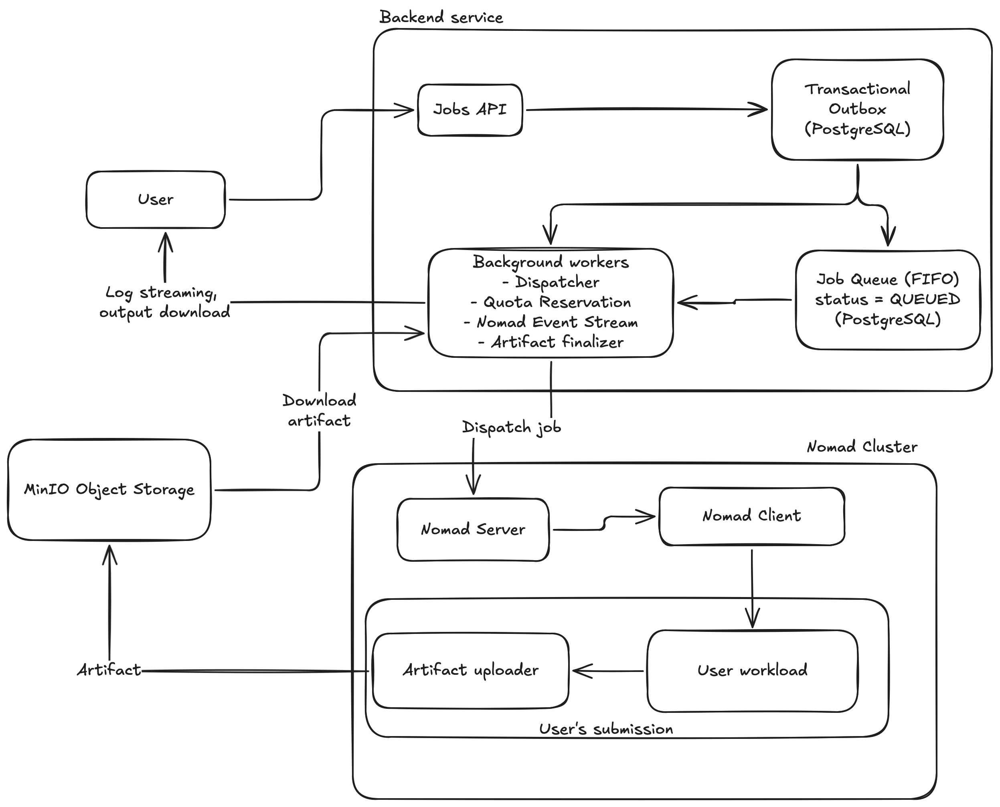

PCRM turns university-owned servers into a governed self-service platform: users submit container jobs, admins control quota, and workloads run on a private Nomad cluster.
Students and research groups can burn budget with long-running jobs, retries, or forgotten instances.
Without quota, queueing, and audit trails, access depends on manual coordination and trust.
University datasets, lab results, and teaching environments often need private infrastructure.
PCRM does not replace execution infrastructure. It wraps it with product workflows: admission, scheduling, quota accounting, logs, artifact delivery, and admin visibility.
Deploy container workloads, request CPU/RAM/GPU, stream logs, cancel active jobs, download output artifacts.
Grant extra quota by month, inspect remaining time, keep usage tied to users and reasons.
Nomad nodes are synced into the app, including status, CPU, RAM, heartbeat, scheduling eligibility, and GPU capability.
Monthly policy or admin bonus creates available compute minutes.
User posts image, command, env vars, CPU, RAM, and optional GPU flag.
Admission reserves minutes before job can enter FIFO queue.
Dispatcher sends accepted job to Nomad, state follows event stream.
Logs stream to UI, output artifact lands in MinIO, quota settles.
Fields map directly to backend contract: dockerImage, executionCommand, reqCpuCores, reqRamGb, reqGpu, and env vars.
Users see status, resources, consumed time, command, live logs, cancel action, and artifact download when available.
Admins select user, quota month, hours, and reason. Requests are idempotent and update current balance.
Nodes page refreshes Nomad-derived status, resources, heartbeat, scheduling eligibility, drain state, and GPU availability.
The architecture separates submission API, transactional queueing, background workers, Nomad execution, and S3-compatible storage.

Next.js 16, React 19, Tailwind 4, shadcn/Radix components, browser session routed through internal API handlers.
Spring Boot 4, Java 25, REST endpoints, SSE job updates, JPA repositories, scheduled workers, Flyway migrations.
Self-hosted Supabase: Auth JWTs, PostgreSQL database, Studio and APIs exposed through Kong gateway.
HashiCorp Nomad schedules Docker workloads across nodes. Backend dispatches jobs and follows Nomad event stream.
MinIO provides S3-compatible storage for output artifacts and captured stdout/stderr log chunks.
API stores job and outbox message in one database transaction.
Admission worker reserves initial quota lease and emits queue event.
FIFO dispatcher claims oldest runnable job using CPU/RAM/GPU capacity checks.
Nomad allocation events move job through scheduling and running states.
Runtime has ended; quota settles, logs finish, artifact finalizer verifies MinIO object.
Job ends as succeeded, failed, canceled, timed out, or infra failed.
user_quota_balance_currentTracks granted, reserved, consumed, and available minutes per user and interval with versioning.
Admission reserves a lease before dispatch. Worker renews before expiry or stops job when quota cannot continue.
quota_usage_ledgerAppend-only entries record reserve, consume, release/refund facts with job and correlation IDs.
Idempotency-Key protects job submit and admin grant workflows from duplicate browser retries.
Job state changes and emitted messages commit together in PostgreSQL, so worker events are not lost.
outbox_consumer_dedupe prevents repeated worker handling from double-reserving quota.
Repository queries claim one queue candidate for update, preserving FIFO semantics under scheduled polling.
has_nvidia_gpu.DISPATCHING jobs are retried; failed dispatch refunds the initial lease.The queue is still understandable to users, but it will not launch a job that cannot run on the current cluster snapshot.
Job details page listens for status and log events while job is active, then closes stream on terminal state.
Backend reads Nomad allocation logs, stores offsets and chunks, and serves latest captured output after completion.
Artifact state moves pending, uploading, available, missing, or failed. Download is exposed only when metadata verifies object exists.